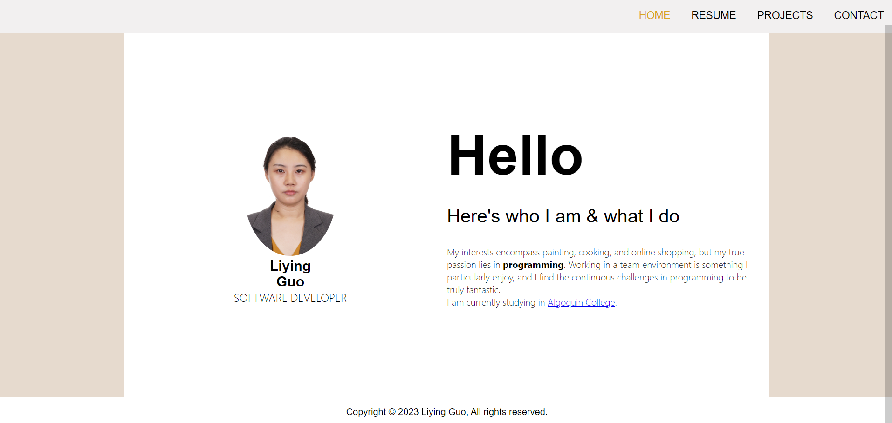
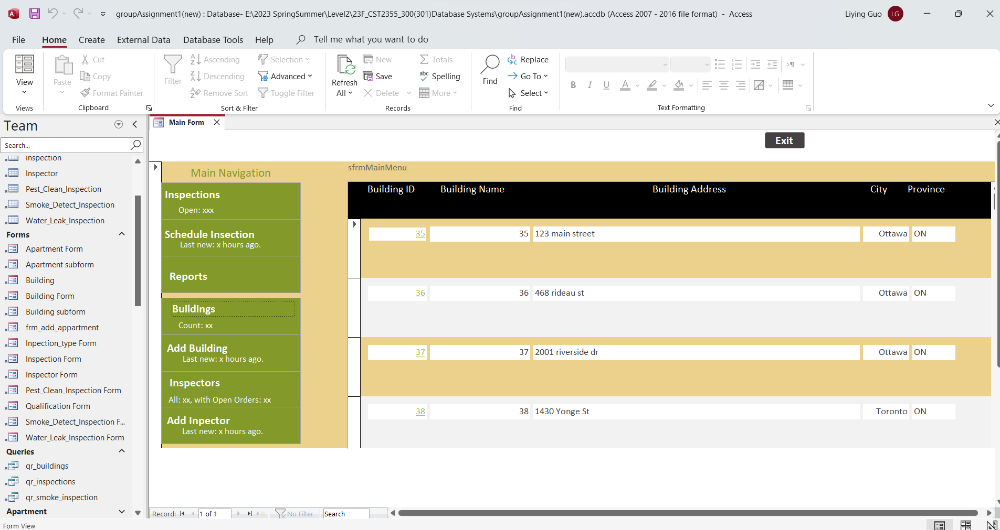
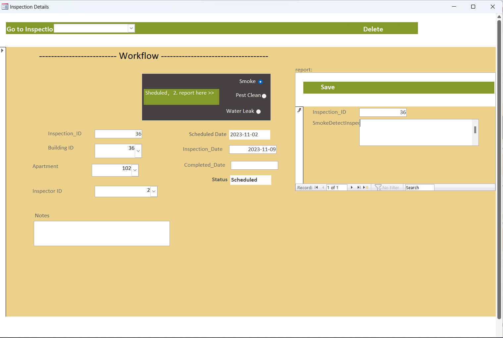
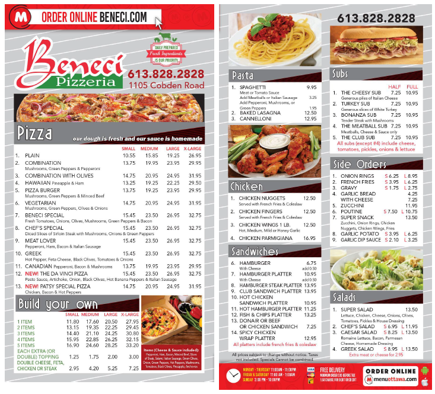
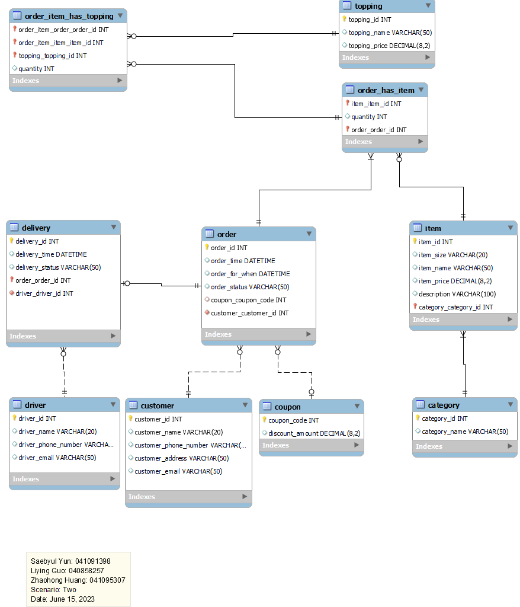
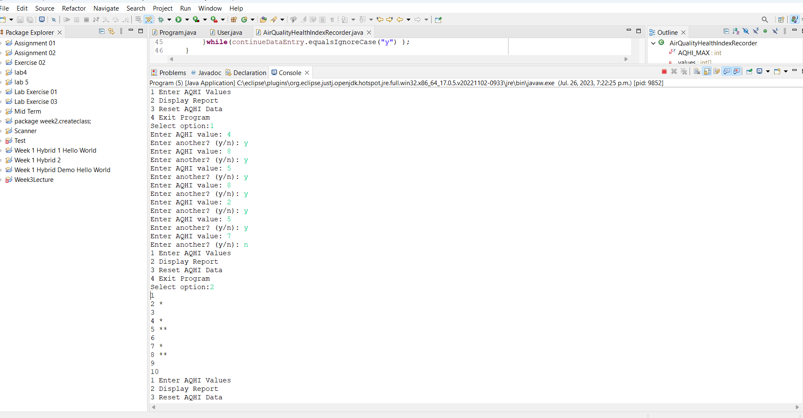

PROJECTS
Personal Portfolio
Nov. 2023
A web application with 4 web pages including home, resume, projects, and
contact.
-
Implemented Wireframe and Sitemap for the application.
-
Implemented the web pages.
Tech Stack: HTML5, CSS3 and JavaScript

Apartment Inspection Scheduling System
Oct. 2023
A form application to help an inspection company on scheduling
and reporting inspections with one main navigation form, 5 forms
for each data table along with sub-forms.
-
Used MS Access to design and implement a relational database
with 7 tables including building, apartment, inspector, inspection,
smoke inspection, pet cleaning inspection, water leak inspection.
-
Used MS Access to implement a form application with multiple forms
including main menu form with its sub-forms, building form
with its sub-forms, inspector form, inspection form with its sub-forms,
report form with its sub-forms; Used Macro and VB to
achieve the functionalities
-
Conducted database backup and restore.
-
Migrate database from MS Access to MS SQL Server
Tech Stack: MS Access, SQL, Macro, VBA


Restaurant Online Order
Aug. 2023
A database product to support a restaurant online order application.
-
Sketched conceptual database model, logical database model and physical database model.
-
Wrote SQL (DDL, DML)
-
In MySQL, Used DDL to create a relational database with 8 tables including category,
dish, topping, employee, customer, order, delivery; Use DML to add, update, query data.
Tech Stack: MySQL, SQL (DDL, DML)


Counting Number
July 2023
A simple java console application which has a main menu with 4 options,
allowing users to input as many numbers as they want to and giving report on user’s input.
-
Designed the application with Class diagram, flow chart.
-
Implemented the application with Java.
-
Wrote Junit tests.
Tech Stack:OOD, OOP, Java, Junit
